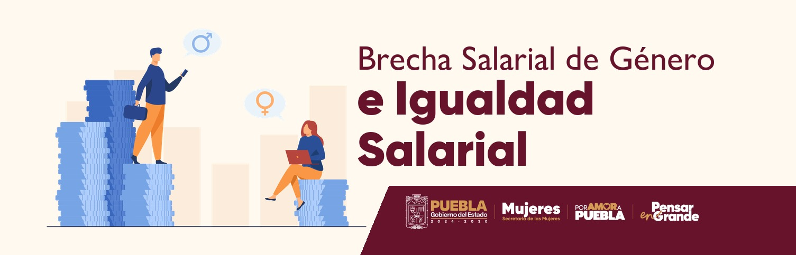

Secretaría de Economía. (2015, 23 de noviembre). Norma Mexicana NMX-R-025-SCFI-2015 en igualdad laboral y no discriminación. Diario Oficial de la Federación. https://www.dof.gob.mx/nota_detalle.php?codigo=5394098&fecha=23/11/2015
INEGI. (2022a). Encuesta Nacional de Ocupación y Empleo (ENOE). Indicadores de ocupación y empleo. Instituto Nacional de Estadística y Geografía. https://www.inegi.org.mx/programas/enoe/15ymas/
INEGI. (2019). Encuesta Nacional sobre Uso del Tiempo (ENUT) 2019. Instituto Nacional de Estadística y Geografía. https://www.inegi.org.mx/programas/enut/2019/
IMCO. (2023). Mujeres en las secretarías de estado 2023. Instituto Mexicano para la Competitividad. https://imco.org.mx/mujeres-en-las-secretarias-de-estado-2023/
IMCO. (2022). Brecha salarial de género. Instituto Mexicano para la Competitividad. https://imco.org.mx/brecha-salarial-de-genero/
CONAPRED. (s.f.). Norma Mexicana NMX-R-025-SCFI-2015. Consejo Nacional para Prevenir la Discriminación. https://www.conapred.org.mx/
INMUJERES. (s.f.). Norma Mexicana NMX-R-025-SCFI-2015 en igualdad laboral y no discriminación. Instituto Nacional de las Mujeres. https://www.gob.mx/inmujeres
STPS. (s.f.). Norma Mexicana NMX-R-025-SCFI-2015 en igualdad laboral y no discriminación. Secretaría del Trabajo y Previsión Social. https://www.gob.mx/stps/acciones-y-programas/norma-mexicana-nmx-r-025-scfi-2015-en-igualdad-laboral-y-no-discriminacion
La NMX-R-025-SCFI-2015 establece el mínimo exigible de igualdad laboral. En la Situación Didáctica 4 pondremos en práctica estos criterios en procesos concretos de tu institución.